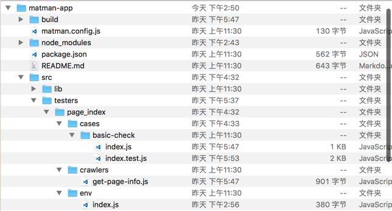

<!DOCTYPE HTML>
<html lang="" >
    <head>
        <meta charset="UTF-8">
        <meta content="text/html; charset=utf-8" http-equiv="Content-Type">
        <title>快速上手 · GitBook</title>
        <meta http-equiv="X-UA-Compatible" content="IE=edge" />
        <meta name="description" content="">
        <meta name="generator" content="GitBook 3.2.3">
        
        
        
    
    <link rel="stylesheet" href="../gitbook/style.css">

    
            
                
                <link rel="stylesheet" href="../gitbook/gitbook-plugin-highlight/website.css">
                
            
                
                <link rel="stylesheet" href="../gitbook/gitbook-plugin-search/search.css">
                
            
                
                <link rel="stylesheet" href="../gitbook/gitbook-plugin-fontsettings/website.css">
                
            
        

    

    
        
    
        
    
        
    
        
    
        
    
        
    

        
    
    
    <meta name="HandheldFriendly" content="true"/>
    <meta name="viewport" content="width=device-width, initial-scale=1, user-scalable=no">
    <meta name="apple-mobile-web-app-capable" content="yes">
    <meta name="apple-mobile-web-app-status-bar-style" content="black">
    <link rel="apple-touch-icon-precomposed" sizes="152x152" href="../gitbook/images/apple-touch-icon-precomposed-152.png">
    <link rel="shortcut icon" href="../gitbook/images/favicon.ico" type="image/x-icon">

    
    <link rel="next" href="../main-concepts/page-snapshot.html" />
    
    
    <link rel="prev" href="install.html" />
    

    </head>
    <body>
        
<div class="book">
    <div class="book-summary">
        
            
<div id="book-search-input" role="search">
    <input type="text" placeholder="Type to search" />
</div>

            
                <nav role="navigation">
                


<ul class="summary">
    
    

    

    
        
        
    
        <li class="chapter " data-level="1.1" data-path="../">
            
                <a href="../">
            
                    
                    关于 Matman
            
                </a>
            

            
        </li>
    

    
        
        <li class="header">安装</li>
        
        
    
        <li class="chapter " data-level="2.1" data-path="install.html">
            
                <a href="install.html">
            
                    
                    安装和升级
            
                </a>
            

            
        </li>
    
        <li class="chapter active" data-level="2.2" data-path="getting-started.html">
            
                <a href="getting-started.html">
            
                    
                    快速上手
            
                </a>
            

            
        </li>
    

    
        
        <li class="header">主要概念</li>
        
        
    
        <li class="chapter " data-level="3.1" data-path="../main-concepts/page-snapshot.html">
            
                <a href="../main-concepts/page-snapshot.html">
            
                    
                    页面快照
            
                </a>
            

            
        </li>
    
        <li class="chapter " data-level="3.2" data-path="../main-concepts/data-snapshot.html">
            
                <a href="../main-concepts/data-snapshot.html">
            
                    
                    数据快照
            
                </a>
            

            
        </li>
    
        <li class="chapter " data-level="3.3" data-path="../main-concepts/test-by-mock.html">
            
                <a href="../main-concepts/test-by-mock.html">
            
                    
                    基于白盒数据测试数据快照
            
                </a>
            

            
        </li>
    

    
        
        <li class="header">示例</li>
        
        
    
        <li class="chapter " data-level="4.1" data-path="../example/preface.html">
            
                <a href="../example/preface.html">
            
                    
                    前言
            
                </a>
            

            
        </li>
    
        <li class="chapter " data-level="4.2" data-path="../example/simple.html">
            
                <a href="../example/simple.html">
            
                    
                    示例一
            
                </a>
            

            
        </li>
    
        <li class="chapter " data-level="4.3" data-path="../example/transaction.html">
            
                <a href="../example/transaction.html">
            
                    
                    示例二
            
                </a>
            

            
        </li>
    

    
        
        <li class="header">进阶</li>
        
        
    

    
        
        <li class="header">API</li>
        
        
    
        <li class="chapter " data-level="6.1" data-path="../api/matman-config.html">
            
                <a href="../api/matman-config.html">
            
                    
                    matman.config.js 配置
            
                </a>
            

            
        </li>
    
        <li class="chapter " data-level="6.2" data-path="../api/web-crawl-util.html">
            
                <a href="../api/web-crawl-util.html">
            
                    
                    前端爬虫工具 web-crawl-util
            
                </a>
            

            
        </li>
    
        <li class="chapter " data-level="6.3" data-path="../api/Interaction.html">
            
                <a href="../api/Interaction.html">
            
                    
                    交互函数
            
                </a>
            

            
        </li>
    

    
        
        <li class="header">贡献</li>
        
        
    

    
        
        <li class="header">FAQ</li>
        
        
    
        <li class="chapter " data-level="8.1" data-path="../faq/common.html">
            
                <a href="../faq/common.html">
            
                    
                    常见问题
            
                </a>
            

            
        </li>
    

    

    <li class="divider"></li>

    <li>
        <a href="https://www.gitbook.com" target="blank" class="gitbook-link">
            Published with GitBook
        </a>
    </li>
</ul>


                </nav>
            
        
    </div>

    <div class="book-body">
        
            <div class="body-inner">
                
                    

<div class="book-header" role="navigation">
    

    <!-- Title -->
    <h1>
        <i class="fa fa-circle-o-notch fa-spin"></i>
        <a href=".." >快速上手</a>
    </h1>
</div>


                    <div class="page-wrapper" tabindex="-1" role="main">
                        <div class="page-inner">
                            
<div id="book-search-results">
    <div class="search-noresults">
    
                                <section class="normal markdown-section">
                                
                                <h1 id="&#x5FEB;&#x901F;&#x4E0A;&#x624B;">&#x5FEB;&#x901F;&#x4E0A;&#x624B;</h1>
<p>&#x6309;&#x7167; <a href="install.html">&#x5B89;&#x88C5;&#x548C;&#x5347;&#x7EA7;</a> &#x4E00;&#x6587;&#x914D;&#x7F6E;&#x597D;&#x73AF;&#x5883;&#x4E4B;&#x540E;&#xFF0C;&#x5F00;&#x59CB;&#x6211;&#x4EEC;&#x7684;&#x4F7F;&#x7528; Matman &#x4E4B;&#x65C5;&#x3002;</p>
<h2 id="1-&#x521D;&#x59CB;&#x5316;&#x8BED;&#x6CD5;">1. &#x521D;&#x59CB;&#x5316;&#x8BED;&#x6CD5;</h2>
<p><code>matman init</code> &#x8BED;&#x6CD5;&#xFF1A;</p>
<pre><code>$ matman init

  Usage: mockstar init &lt;command&gt; [options]
  Commands:
      project    Initialize project.
      tester     Initialize tester.
  Options:
      --dev                  Debug for development.
  Report bugs to https://github.com/mockstarjs/mockstar/issues.
</code></pre><h2 id="2-&#x521D;&#x59CB;&#x5316;&#x9879;&#x76EE;">2. &#x521D;&#x59CB;&#x5316;&#x9879;&#x76EE;</h2>
<p>&#x8FD0;&#x884C;&#x5982;&#x4E0B;&#x547D;&#x4EE4;&#x521D;&#x59CB;&#x5316;&#x4E00;&#x4E2A;&#x9879;&#x76EE;&#xFF1A;</p>
<pre><code class="lang-bash">$ matman init project
</code></pre>
<p>&#x6309;&#x7167;&#x63D0;&#x793A;&#x64CD;&#x4F5C;&#x5373;&#x53EF;&#x3002;</p>
<h2 id="3-&#x5B89;&#x88C5;&#x4F9D;&#x8D56;">3. &#x5B89;&#x88C5;&#x4F9D;&#x8D56;</h2>
<p>&#x521D;&#x59CB;&#x5316;&#x5B8C;&#x6210;&#x4E4B;&#x540E;&#xFF0C;&#x8FDB;&#x5165;&#x5230;&#x6211;&#x4EEC;&#x7684;&#x9879;&#x76EE;&#x4E2D;&#xFF0C;&#x624B;&#x52A8;&#x5B89;&#x88C5; npm &#x5305;&#x4F9D;&#x8D56;&#x3002;&#x5047;&#x8BBE;&#x6211;&#x4EEC;&#x7684;&#x9879;&#x76EE;&#x540D;&#x79F0;&#x4E3A; <code>matman-app</code>&#xFF0C;&#x5219;&#xFF1A;</p>
<pre><code class="lang-bash">$ <span class="hljs-built_in">cd</span> matman-app
$ npm isntall
</code></pre>
<h2 id="4-&#x9879;&#x76EE;&#x7ED3;&#x6784;">4. &#x9879;&#x76EE;&#x7ED3;&#x6784;</h2>
<p></p>
<ul>
<li><p><code>src</code> &#x6587;&#x4EF6;&#x5939;</p>
<p>  <code>lib</code> &#x6587;&#x4EF6;&#x5939;&#x4E2D;&#x5B58;&#x653E;&#x4E00;&#x4E9B;&#x722C;&#x866B;&#x6216;&#x6D4B;&#x8BD5;&#x7528;&#x5230;&#x7684;&#x516C;&#x5171;&#x65B9;&#x6CD5;&#x53CA;&#x6570;&#x636E;&#xFF1B;</p>
<p>  <code>testers</code> &#x5B58;&#x653E;&#x540E;&#x9762;&#x751F;&#x6210;&#x7684;&#x6D4B;&#x8BD5;&#x5BF9;&#x8C61;</p>
<p>  <code>page_index</code> &#x4E00;&#x4E2A;&#x5178;&#x578B;&#x7684;&#x6D4B;&#x8BD5;&#x5BF9;&#x8C61;&#xFF0C;<code>cases/xx/index.js</code> &#x4E2D;&#x7F16;&#x5199; electron &#x6267;&#x884C;&#x65F6;&#x7528;&#x5230;&#x7684;&#x53C2;&#x6570;&#xFF0C;<code>cases/xx/index.test.js</code> &#x4E2D;&#x7F16;&#x5199;&#x6D4B;&#x8BD5;&#x7528;&#x4F8B;&#xFF0C;<code>crawlers/get-page-info.js</code> &#x4E2D;&#x7F16;&#x5199;&#x722C;&#x866B;&#x811A;&#x672C;&#xFF0C;<code>env/index.js</code> &#x4E2D;&#x5B58;&#x653E;&#x73AF;&#x5883;&#x76F8;&#x5173;&#x53C2;&#x6570;&#x5982;&#x722C;&#x53D6;&#x9875;&#x9762;&#x94FE;&#x63A5;&#x7B49;&#x3002;</p>
</li>
<li><p><code>matman.config.js</code> &#x914D;&#x7F6E;&#x6587;&#x4EF6;</p>
<p>  &#x914D;&#x7F6E;&#x5BF9;&#x5E94; mocker &#x6869;&#x5BF9;&#x8C61;&#x5B58;&#x653E;&#x7684;&#x5730;&#x5740;</p>
</li>
</ul>
<h2 id="5-&#x542F;&#x52A8;&#x9879;&#x76EE;">5. &#x542F;&#x52A8;&#x9879;&#x76EE;</h2>
<p>&#x6267;&#x884C;&#x5982;&#x4E0B;&#x547D;&#x4EE4;&#x5373;&#x5B8C;&#x6210;&#x9879;&#x76EE;&#x7684;&#x542F;&#x52A8;&#x4E86;&#xFF1A;</p>
<pre><code class="lang-bash">$ npm build <span class="hljs-comment">#&#x4FEE;&#x6539;&#x8FC7;&#x722C;&#x866B;&#x6587;&#x4EF6;&#x540E;&#xFF0C;&#x5982;&#x679C;&#x53EA;&#x662F;&#x4FEE;&#x6539;&#x6D4B;&#x8BD5;&#x7528;&#x4F8B;&#x5219;&#x65E0;&#x9700;&#x6267;&#x884C;&#x8BE5;&#x6B65;&#x9AA4;</span>

<span class="hljs-comment"># &#x4E4B;&#x540E;</span>
$ npm run <span class="hljs-built_in">test</span>
</code></pre>
<h2 id="6-&#x65B0;&#x589E;-tester-&#x6D4B;&#x8BD5;&#x5BF9;&#x8C61;">6. &#x65B0;&#x589E; tester &#x6D4B;&#x8BD5;&#x5BF9;&#x8C61;</h2>
<p>&#x5728; <code>testers</code> &#x76EE;&#x5F55;&#x4E0B;&#xFF0C;&#x6267;&#x884C;&#x5982;&#x4E0B;&#x547D;&#x4EE4;&#x6765;&#x5FEB;&#x901F;&#x65B0;&#x5EFA;&#x4E00;&#x4E2A; tester: </p>
<pre><code class="lang-bash">$ matman init tester
</code></pre>
<blockquote>
<p>&#x6211;&#x4EEC;&#x63A8;&#x8350;&#x4E3A; tester &#x8BBE;&#x7F6E;&#x4E00;&#x4E2A;&#x5BB9;&#x6613;&#x8BC6;&#x522B;&#x7684;&#x540D;&#x5B57;&#xFF0C;&#x4E00;&#x822C;&#x5EFA;&#x8BAE;&#x4E0E;&#x9875;&#x9762;&#x76F8;&#x5173;&#xFF0C;&#x4F8B;&#x5982;&#x53D6;&#x9875;&#x9762;&#x7684;&#x540D;&#x5B57;&#x4E3A; tester &#x540D;&#x5B57;&#xFF0C;&#x8FD9;&#x6837;&#x5BB9;&#x6613;&#x67E5;&#x627E;&#x3002;</p>
</blockquote>
<p>&#x65B0;&#x5EFA;&#x5B8C;&#x6210;&#x4E4B;&#x540E;&#xFF0C;&#x6211;&#x4EEC;&#x552F;&#x4E00;&#x5FC5;&#x987B;&#x8981;&#x4FEE;&#x6539;&#x7684;&#x662F;&#x76EE;&#x5F55;&#x4E0B;&#x7684; <code>env/index.js</code> &#x6587;&#x4EF6;&#xFF0C;&#x8BBE;&#x7F6E;&#x5176;&#x4E2D;&#x7684; <code>getPageUrl</code> &#x51FD;&#x6570;&#x4E2D;&#x9875;&#x9762;&#x94FE;&#x63A5;&#x53C2;&#x6570;&#x7684;&#x503C;&#xFF0C;&#x8BE5;&#x503C;&#x7528;&#x4E8E;&#x5339;&#x914D;&#x6D4B;&#x8BD5;&#x7528;&#x7684;&#x9875;&#x9762;&#xFF0C;&#x8FD8;&#x6709; <code>WAIT</code> &#x503C;&#xFF0C;&#x8BE5;&#x503C;&#x7528;&#x4E8E;&#x63A7;&#x5236;&#x722C;&#x866B;&#x5F00;&#x59CB;&#x6267;&#x884C;&#x7684;&#x65F6;&#x95F4;&#x70B9;&#x3002;</p>

                                
                                </section>
                            
    </div>
    <div class="search-results">
        <div class="has-results">
            
            <h1 class="search-results-title"><span class='search-results-count'></span> results matching "<span class='search-query'></span>"</h1>
            <ul class="search-results-list"></ul>
            
        </div>
        <div class="no-results">
            
            <h1 class="search-results-title">No results matching "<span class='search-query'></span>"</h1>
            
        </div>
    </div>
</div>

                        </div>
                    </div>
                
            </div>

            
                
                <a href="install.html" class="navigation navigation-prev " aria-label="Previous page: 安装和升级">
                    <i class="fa fa-angle-left"></i>
                </a>
                
                
                <a href="../main-concepts/page-snapshot.html" class="navigation navigation-next " aria-label="Next page: 页面快照">
                    <i class="fa fa-angle-right"></i>
                </a>
                
            
        
    </div>

    <script>
        var gitbook = gitbook || [];
        gitbook.push(function() {
            gitbook.page.hasChanged({"page":{"title":"快速上手","level":"2.2","depth":1,"next":{"title":"页面快照","level":"3.1","depth":1,"path":"main-concepts/page-snapshot.md","ref":"main-concepts/page-snapshot.md","articles":[]},"previous":{"title":"安装和升级","level":"2.1","depth":1,"path":"installation/install.md","ref":"installation/install.md","articles":[]},"dir":"ltr"},"config":{"gitbook":"*","theme":"default","variables":{},"plugins":[],"pluginsConfig":{"highlight":{},"search":{},"lunr":{"maxIndexSize":1000000,"ignoreSpecialCharacters":false},"sharing":{"facebook":true,"twitter":true,"google":false,"weibo":false,"instapaper":false,"vk":false,"all":["facebook","google","twitter","weibo","instapaper"]},"fontsettings":{"theme":"white","family":"sans","size":2},"theme-default":{"styles":{"website":"styles/website.css","pdf":"styles/pdf.css","epub":"styles/epub.css","mobi":"styles/mobi.css","ebook":"styles/ebook.css","print":"styles/print.css"},"showLevel":false}},"structure":{"langs":"LANGS.md","readme":"README.md","glossary":"GLOSSARY.md","summary":"SUMMARY.md"},"pdf":{"pageNumbers":true,"fontSize":12,"fontFamily":"Arial","paperSize":"a4","chapterMark":"pagebreak","pageBreaksBefore":"/","margin":{"right":62,"left":62,"top":56,"bottom":56}},"styles":{"website":"styles/website.css","pdf":"styles/pdf.css","epub":"styles/epub.css","mobi":"styles/mobi.css","ebook":"styles/ebook.css","print":"styles/print.css"}},"file":{"path":"installation/getting-started.md","mtime":"2019-07-23T04:57:39.000Z","type":"markdown"},"gitbook":{"version":"3.2.3","time":"2019-07-24T07:11:57.299Z"},"basePath":"..","book":{"language":""}});
        });
    </script>
</div>

        
    <script src="../gitbook/gitbook.js"></script>
    <script src="../gitbook/theme.js"></script>
    
        
        <script src="../gitbook/gitbook-plugin-search/search-engine.js"></script>
        
    
        
        <script src="../gitbook/gitbook-plugin-search/search.js"></script>
        
    
        
        <script src="../gitbook/gitbook-plugin-lunr/lunr.min.js"></script>
        
    
        
        <script src="../gitbook/gitbook-plugin-lunr/search-lunr.js"></script>
        
    
        
        <script src="../gitbook/gitbook-plugin-sharing/buttons.js"></script>
        
    
        
        <script src="../gitbook/gitbook-plugin-fontsettings/fontsettings.js"></script>
        
    

    </body>
</html>

